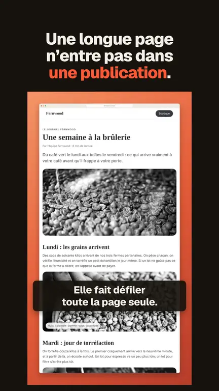
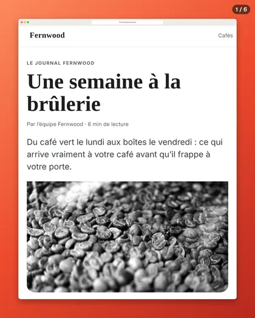
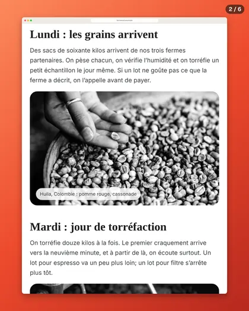

Transformer une capture d’écran de page Web en vidéo ou en carrousel
Vérifié le 4 novembre 2026. Écrit pour Vitrine 1.2.2.
Une longue page fait une bonne publication. Une vidéo qui défile montre le tout en mouvement. Un carrousel permet de la parcourir du doigt, diapositive par diapositive. Voici comment faire l’un ou l’autre à partir d’une page Web, la façon lente et la façon rapide.
Faire une vidéo qui défile
Façon 1 : le faire soi-même
- Faites une capture d’écran de page entière. Dans Chrome, ouvrez les outils de développement (F12 sous Windows, Cmd + Option + I sur Mac), appuyez sur Ctrl + Maj + P (Cmd + Maj + P sur Mac) et choisissez la commande Capture full size screenshot (son nom peut différer si vos outils sont en français). Détails dans capture d’écran de page entière dans Chrome.
- Ouvrez un logiciel de montage vidéo et placez la grande image sur la ligne de temps. Ajoutez une animation de position ou de panoramique qui la fait glisser du haut vers le bas.
- Exportez dans le format voulu par votre plateforme.
Ça marche, et ça prend du temps. Les erreurs courantes : défiler trop vite pour lire, et un texte trop petit sur un téléphone.
Façon 2 : un outil qui anime une image
Certains sites prennent une grande image, vous laissent choisir la vitesse et l’accélération, et exportent une vidéo. Il vous faut quand même une bonne capture au départ, et le résultat n’est aussi propre que la capture fournie. Les forfaits gratuits limitent souvent la durée ou le nombre d’exportations.
Façon 3 : un outil qui part d’un lien
D’autres outils prennent une adresse Web, chargent la page sur leurs propres ordinateurs et l’enregistrent en train de défiler. Ils sont rapides pour une page publique. Le compromis : ils ne voient jamais la version où vous êtes connecté, et la vidéo a la durée et le format qu’ils ont choisis.
Façon 4 : Vitrine, à partir de la capture que vous avez déjà
Vitrine est une extension Chrome gratuite. La vidéo est faite à partir de votre capture, avec votre mise en forme encadrée, sur votre ordinateur.
- Ajoutez Vitrine depuis le Chrome Web Store et épinglez-la.
- Ouvrez la page et appuyez sur Alt + Maj + S (Windows) ou Option + Maj + S (Mac). Vitrine capture toute la page et ouvre le Studio.
- Dans le Studio, trouvez Page en vidéo. Choisissez un format : 16:9 pour les diapos et X, 1:1 pour les publications, 4:5 pour les fils d’actualité, 9:16 pour les Stories.
- Choisissez un zoom (1×, Auto, 1,5× ou 2×) et la durée avec le curseur.
- Cliquez sur Créer la vidéo. Vous obtenez un fichier MP4 dans votre dossier Téléchargements.

Bon à savoir :
- La vitesse suit la lecture. Par défaut, la vidéo défile à un rythme lisible, et Vitrine vous prévient si la durée choisie ne montre que le haut d’une longue page. Quand une longue page ne tient pas dans la durée choisie, Vitrine propose Temps forts, qui s’arrête sur quelques parties de la page pendant quelques secondes chacune, et Vidéo plus longue, qui va jusqu’à 2 minutes.
- Texte petit sur un téléphone. Dans les formats hauts (9:16 et 4:5), si le texte risque d’être petit, Vitrine le dit. Rétrécissez la fenêtre de Chrome avant de capturer, pour que la page se dispose comme sur un téléphone.
- Les vidéos gratuites portent une petite mention « Fait avec Vitrine ». Pro la retire.
- Si Chrome n’a pas d’encodeur H.264, Vitrine vous avertit que la vidéo pourrait ne pas se lire sur un iPhone ou dans QuickTime.
- Rien n’est téléversé. Les vidéos sont créées sur votre ordinateur, avec les outils vidéo de Chrome.
Faire un carrousel
Un carrousel est une série de diapositives, habituellement en 4:5, que l’on fait défiler sur LinkedIn ou Instagram.
À la main
Capturez la page, puis découpez la grande image en diapositives dans un outil de conception, un cadre par diapositive, et numérotez-les. Le plus difficile est de choisir où couper. Au mauvais endroit, une ligne de texte est tranchée en deux.
Avec Vitrine
- Capturez la page de la même façon (Alt + Maj + S ou Option + Maj + S).
- Dans le Studio, trouvez Carrousel. Vitrine crée des diapositives 4:5 numérotées et les coupe entre les blocs de texte, pas à travers.
- Choisissez un zoom si le texte paraît petit. Cliquez ensuite sur PDF pour LinkedIn, ou sur Diapositives PNG (ZIP) pour Instagram.


Les carrousels conviennent mieux aux longues pages. Une page courte ne donne qu’une ou deux diapositives, et Vitrine le dit, puis propose l’image encadrée à la place. Sur une très longue page, le carrousel contient les premières diapositives, et vous pouvez recadrer la capture pour choisir une autre partie. Les carrousels gratuits portent la petite mention « Fait avec Vitrine » sur la dernière diapositive.
Quelle façon choisir?
- Une vidéo, sans hâte, et vous aimez le montage : faites-le vous-même.
- Une page publique, sans capture à faire : un outil qui part d’un lien.
- Des pages capturées souvent, des pages où vous êtes connecté, ou une vidéo et un carrousel à partir de la même capture : Vitrine.
Ce que ça coûte
Créer des vidéos et des carrousels est gratuit, avec la petite mention. Pro coûte 24 $ US une seule fois, sans abonnement, et retire la mention. Le prix de lancement est de 19 $ US jusqu’au 30 novembre 2026. Voyez la comparaison des prix et l’accueil de Vitrine.
À lire aussi : capture d’écran de page entière en PDF.